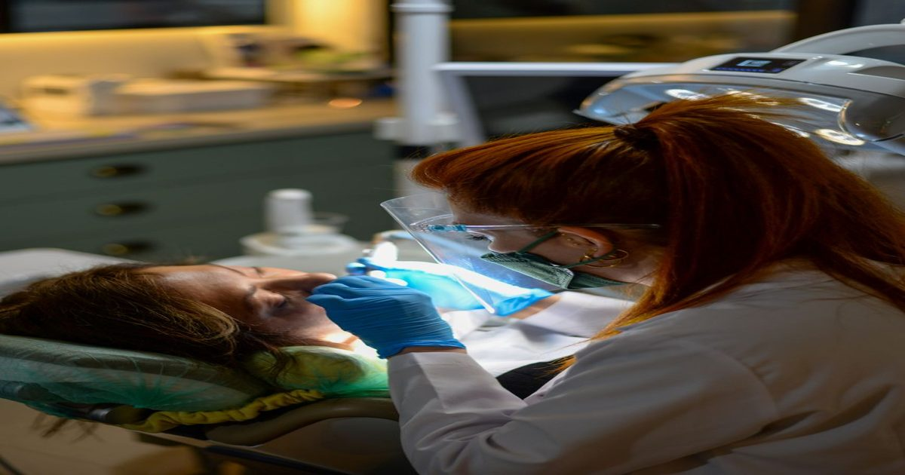

Тренд на «голые» ногти: как скинтификация меняет уход
На последних показах моды и красной дорожке модели и звезды демонстрируют полностью натуральные ногти, акцентируя внимание на здоровье кутикулы и гладкости пластины вместо яркого покрытия. Этот сдвиг от декоративного маникюра к уходу за состоянием ногтей отражает более широкое стремление к минималистичной эстетике, где качество собственной пластины становится главным индикатором ухоженности.
Эстетика натуральности на подиумах
На недавних показах крупных брендов маникюристы полностью отказались от лака, предпочитая тщательную обработку кутикулы и легкое полирование, что придает ногтям здоровый блеск без дополнительного слоя пигмента. Такой подход подчеркивает, что идеальная форма и гладкость поверхности становятся самостоятельным украшением, не требующим маскировки.
Зрители и специалисты отмечают, что минималистичный вид ногтей воспринимается как признак заботы о себе, а не как упущение ухода. Это меняет ожидания клиентов салонов: они всё чаще просят процедуры, укрепляющие пластину, а не только декоративное покрытие.

Смена фокуса от декора к здоровью ногтевой пластины
Повторяющиеся процедуры наращивания и грубое снятие геля могут приводить к снижению толщины пластины, ее ломкости и слоистости, что заставляет потребителей искать средства восстановления. В ответ на этот запрос бренды выпускают продукты, направленные на гидратацию и укрепление, а не только на цветовое оформление.
Молодое поколение покупателей осознанно выбирает перерывы между покрытиями, понимая, что здоровая основа продлевает срок службы любого маникюра. Такой подход формирует привычку регулярного ухода, аналогичную уходу за лицом, где очищение и увлажнение предшествуют декоративной косметике.

Ингредиенты из ухода за кожей в средствах для ногтей
Формулы новых бальзамов и сывороток для ногтей включают компоненты, привычные для ухода за лицом: гиалуроновую кислоту, керамиды, пептиды и растительные масла, которые способствуют удержанию влаги и укреплению кератиновой структуры. Перенос этих активов на ногтевую пластину обоснован схожестью барьерных функций кожи и ногтя.
Использование знакомых косметических ингредиентов позволяет потребителям легче ориентироваться в составе и доверять эффективности средств, не прибегая к специализированным медицинским препаратам. Производители делают акцент на ритуальности нанесения: массаж кутикулы с сывороткой становится частью ежедневного ухода, как нанесение крема на лицо.
Ритуалы ухода между визитами в салон
Специалисты рекомендуют вводить в режим дня короткие процедуры: мягкое удаление кутикулы, нанесение увлажняющего масла и защитное покрытие без пигмента, чтобы сохранить эластичность пластины. Регулярность таких действий снижает риск микротравм при бытовых нагрузках.
Домашний уход не заменяет профессиональные процедуры, но создает стабильную базу, на которой салонные маникюры держатся дольше и выглядят аккуратнее. Комбинация салонного эксперта и ежедневного ритуала формирует устойчивый результат без необходимости постоянного обновления цветового слоя.
Переход на натуральные ногти: что обсудить с мастером
Прежде чем полностью отказаться от геля или наращивания, стоит поговорить с мастером о текущем состоянии ногтевой пластины: есть ли слоистость, тонкость, сухость кутикулы или микротравмы после снятия. Специалист оценит, нужен ли период восстановления с ухаживающими покрытиями (например, биогел или укрепляющими базами) или можно сразу перейти на «голый» уход. Важно уточнить, как будет происходить снятие старого материала — только аппаратное или комбинированное, чтобы не усилить повреждение пластины. Если ногти сильно ослаблены, мастер может порекомендовать короткую длину и регулярное питание кутикулы маслами до полного обновления пластины.
Результат перехода зависит от дисциплины в домашнем уходе, частоты посещений мастера для коррекции формы и ухода за кутикулой, а также от общего состояния здоровья: дефициты витаминов, гормональные сдвиги или хроническое стрессовое напряжение замедляют рост и качество пластины. Не стоит ждать мгновенного эффекта — полная смена пластины занимает несколько месяцев, а эстетика «ваши ногти, только лучше» формируется из сочетания профессиональных процедур и ежедневных ритуалов гидратации. У кого ногти по природе тонкие или склонны к ломкости, может потребоваться длительное ношение укрепляющих баз без пигмента.
Коротко: Тренд на натуральные ногти смещает акцент с декора на здоровье пластины, заставляя бренды переносить уходовые ингредиенты из косметики для лица в средства для ногтей. Регулярный домашний ритуал гидратации и защиты становится обязательным дополнением к салонным процедурам.
Какие средства для укрепления ногтей вы используете между визитами в салон и замечаете ли вы разницу в состоянии пластины?